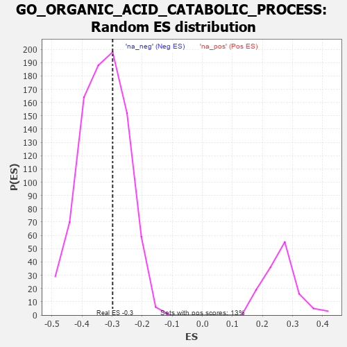

| | | Dataset | 7d |
| Phenotype | NoPhenotypeAvailable |
| Upregulated in class | na_neg |
| GeneSet | GO_ORGANIC_ACID_CATABOLIC_PROCESS |
| Enrichment Score (ES) | -0.2982073 |
| Normalized Enrichment Score (NES) | -0.9063537 |
| Nominal p-value | 0.6339492 |
| FDR q-value | 0.94615513 |
| FWER p-Value | 1.0 |
Table: GSEA Results Summary
 Fig 1: Enrichment plot: GO_ORGANIC_ACID_CATABOLIC_PROCESS
Fig 1: Enrichment plot: GO_ORGANIC_ACID_CATABOLIC_PROCESS
Profile of the Running ES Score & Positions of GeneSet Members on the Rank Ordered List
| PROBE | GENE SYMBOL | GENE_TITLE | RANK IN GENE LIST | RANK METRIC SCORE | RUNNING ES | CORE ENRICHMENT | | 1 | IRS1 | | | 98 | 1.659 | 0.0498 | No |
| 2 | MTRR | | | 154 | 1.217 | 0.0885 | No |
| 3 | ACBD5 | | | 899 | 0.506 | 0.0133 | No |
| 4 | AKT1 | | | 1040 | 0.476 | 0.0134 | No |
| 5 | SDSL | | | 1137 | 0.456 | 0.0184 | No |
| 6 | GPT | | | 1488 | 0.392 | -0.0112 | No |
| 7 | ACOX3 | | | 1670 | 0.361 | -0.0205 | No |
| 8 | MECR | | | 1838 | 0.330 | -0.0293 | No |
| 9 | HIBCH | | | 2031 | 0.301 | -0.0423 | No |
| 10 | PEX2 | | | 2056 | 0.298 | -0.0342 | No |
| 11 | ECH1 | | | 2290 | 0.261 | -0.0539 | No |
| 12 | ACADS | | | 2316 | 0.258 | -0.0473 | No |
| 13 | ECI2 | | | 2794 | 0.184 | -0.1008 | No |
| 14 | PCK2 | | | 2823 | 0.180 | -0.0976 | No |
| 15 | ETFB | | | 2934 | 0.160 | -0.1055 | No |
| 16 | CHP1 | | | 3089 | 0.138 | -0.1198 | No |
| 17 | ETFA | | | 3189 | 0.123 | -0.1277 | No |
| 18 | ILVBL | | | 3352 | 0.097 | -0.1446 | No |
| 19 | PPAT | | | 3382 | 0.091 | -0.1448 | No |
| 20 | MCEE | | | 3673 | 0.048 | -0.1797 | No |
| 21 | ABCD1 | | | 3677 | 0.047 | -0.1783 | No |
| 22 | LPIN3 | | | 3751 | 0.034 | -0.1863 | No |
| 23 | MMAA | | | 3781 | 0.030 | -0.1888 | No |
| 24 | HDC | | | 4018 | -0.011 | -0.2183 | No |
| 25 | DDAH1 | | | 4056 | -0.016 | -0.2224 | No |
| 26 | MTOR | | | 4114 | -0.025 | -0.2287 | No |
| 27 | HMGCL | | | 4141 | -0.031 | -0.2308 | No |
| 28 | MCAT | | | 4285 | -0.058 | -0.2467 | No |
| 29 | CRYL1 | | | 4300 | -0.060 | -0.2462 | No |
| 30 | MTHFS | | | 4337 | -0.066 | -0.2483 | No |
| 31 | AMACR | | | 4338 | -0.066 | -0.2458 | No |
| 32 | ACADL | | | 4360 | -0.069 | -0.2459 | No |
| 33 | GCDH | | | 4463 | -0.087 | -0.2555 | No |
| 34 | HGD | | | 4479 | -0.091 | -0.2540 | No |
| 35 | AASS | | | 4552 | -0.106 | -0.2592 | No |
| 36 | ADTRP | | | 4612 | -0.120 | -0.2622 | No |
| 37 | GCSH | | | 4633 | -0.125 | -0.2600 | No |
| 38 | DCXR | | | 4766 | -0.151 | -0.2710 | No |
| 39 | XYLB | | | 4811 | -0.160 | -0.2706 | No |
| 40 | ABCD3 | | | 4829 | -0.164 | -0.2666 | No |
| 41 | BCAT1 | | | 4857 | -0.168 | -0.2637 | No |
| 42 | CBS | | | 4867 | -0.170 | -0.2585 | No |
| 43 | PCCB | | | 5147 | -0.237 | -0.2849 | No |
| 44 | SARDH | | | 5229 | -0.252 | -0.2857 | No |
| 45 | AIG1 | | | 5329 | -0.281 | -0.2877 | Yes |
| 46 | ACOT8 | | | 5364 | -0.288 | -0.2812 | Yes |
| 47 | ACOX2 | | | 5461 | -0.310 | -0.2817 | Yes |
| 48 | CPT1A | | | 5467 | -0.311 | -0.2707 | Yes |
| 49 | PCCA | | | 5513 | -0.323 | -0.2643 | Yes |
| 50 | CPT2 | | | 5611 | -0.348 | -0.2635 | Yes |
| 51 | IVD | | | 5767 | -0.396 | -0.2682 | Yes |
| 52 | CDO1 | | | 5892 | -0.432 | -0.2677 | Yes |
| 53 | PPM1K | | | 6097 | -0.506 | -0.2746 | Yes |
| 54 | PEX13 | | | 6255 | -0.557 | -0.2736 | Yes |
| 55 | OAT | | | 6293 | -0.572 | -0.2568 | Yes |
| 56 | ABCD4 | | | 6349 | -0.597 | -0.2414 | Yes |
| 57 | ACMSD | | | 6367 | -0.603 | -0.2209 | Yes |
| 58 | NPL | | | 6461 | -0.644 | -0.2085 | Yes |
| 59 | PLIN5 | | | 6524 | -0.672 | -0.1912 | Yes |
| 60 | KYNU | | | 6802 | -0.816 | -0.1957 | Yes |
| 61 | ABHD3 | | | 6804 | -0.816 | -0.1652 | Yes |
| 62 | HEXB | | | 6894 | -0.864 | -0.1440 | Yes |
| 63 | FTCD | | | 7055 | -0.970 | -0.1279 | Yes |
| 64 | TDH | | | 7077 | -0.980 | -0.0938 | Yes |
| 65 | HYKK | | | 7369 | -1.233 | -0.0844 | Yes |
| 66 | OTC | | | 7430 | -1.305 | -0.0430 | Yes |
| 67 | KMO | | | 7432 | -1.308 | 0.0059 | Yes |
| 68 | HEXA | | | 7659 | -1.659 | 0.0395 | Yes |
Table: GSEA details [plain text format]

Fig 2: GO_ORGANIC_ACID_CATABOLIC_PROCESS: Random ES distribution
Gene set null distribution of ES for GO_ORGANIC_ACID_CATABOLIC_PROCESS